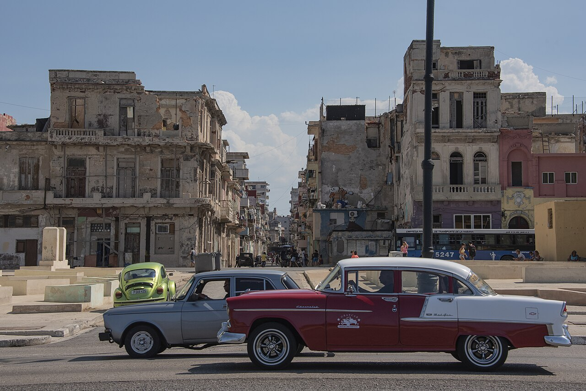

Куба

Куба — музей, который всё ещё работает, и вы живёте внутри. Гавана: Malecon — набережная длиной в восемь километров, где волны прыгают через парапет и город не обижается; классики 1950-х на каждом углу — Chevrolet с латунным мотором, который пережил три ремонта и весь XX век; старый город Гавана-Вьеха с облупленными пастельными фасадами. Мохито в Бодегита-дель-Медио: стены в автографах, включая Хемингуэя. Сальса здесь — не развлечение, а способ двигаться с музыкой; Casa de la Musica по вечерам собирает всех возрастов. Виньялес — долина с моготами, известняковыми стопками в зелёных полях, табачными фермами, где скручивают сигары руками — быстрее, чем вы читаете эти строки. пляжи Варадеро — белый порошок и бирюза. Еда — креольская: "старая одежда" из говядины (ropa vieja), рис с фасолью — moros y cristianos — и местное пиво. Живое — то слово, что здесь работает лучше всего.
Что знать перед поездкой
- Мохито — в Бодегита-дель-Медио, у стен с подписями
- Моготы Винталеса — с фермером, не из окна автобуса
- Наличные — главный инструмент: карты порой не работают